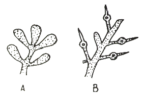
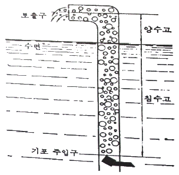
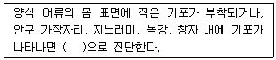

수산양식기사 (2021-08-14 기출문제)
1과목: 어류양식학
1. 방어의 최적성장수온으로 가장 적합한 것은?
- 8 ~ 12℃
- 13 ~ 18℃
- 18 ~ 25℃
- 28 ~ 32℃
(정답률: 73%)

2. MP(Mositure Pellet) 사료에 대한 설명으로 틀린 것은?
- 균일한 품질을 유지하기 어렵다.
- 물에 뜨기 때문에 사료의 허실이 적고 관찰이 용이하다.
- 일반적으로 EP(Extruded Pellet) 사료에 비해 생산 및 관리 경비가 높다.
- 장기 보관이 어려우며 수질 악화 우려가 높다.
(정답률: 83%)
3. 다음 중 우리나라의 냉수성 어류의 성장에 가장 적절한 수원(水源)조건은?
- 연중 수온 범위가 5 ~ 10℃로 유지되는 호수소를 이용할 수 있는 곳
- 연중 수온 범위가 0 ~ 18℃인 계곡수를 이용할 수 있는 곳
- 연중 수온 범위가 0 ~ 20℃인 하천수를 이용할 수 있는 곳
- 연중 수온 범위가 12 ~ 18℃인 지하수를 이용할 수 있는 곳
(정답률: 82%)
4. 참돔의 일반적인 자연 산란 시기는?
- 1 ~ 3월
- 4 ~ 6월
- 7 ~ 9월
- 10 ~ 12월
(정답률: 72%)
5. 물벼룩 발생을 위한 작업은 잉어의 산란예정 약 며칠 전에 시작하는 것이 적당한가?
- 3 ~ 4일
- 7 ~ 8일
- 10 ~ 14일
- 20 ~ 30일
(정답률: 63%)
6. 방류재포 양식에 해당하는 것은?
- 송어를 연안의 가두리에서 양식
- 참돔 치어를 연안에 방류
- 조피볼락을 축제식 양식장에서 양성
- 하천에서 연어성어의 수확
(정답률: 84%)
7. 못 양식과 비교해서 가두리를 이용한 틸라피아 양식의 단점은?
- 토지부족의 해결책이 될 수 있다.
- 고밀도 사육이 가능하다.
- 인공사료를 잘 이용하면 사료효율이 향상된다.
- 사료 저장소, 부화장 그리고 가공시설이 별도로 필요하다.
(정답률: 95%)
8. 무지개송어의 수정란이 발안기까지 도달하는 소요일수는? (단, 부화수온은 10℃ 정도이다.)
- 12일
- 14일
- 16일
- 18일
(정답률: 67%)
9. 다음 어종 중 육상 수조에서 주로 양성이 이루어지는 것은?
- 감성돔
- 조피볼락
- 넙치
- 참돔
(정답률: 95%)
10. 조피볼락의 친어 관리 및 생태에 관한 내용으로 틀린 것은?
- 친어 대상은 자연에서 포획한 것 또는 종묘 생산하여 양식된 것으로 한다.
- 교미 시기의 사육 수온은 10 ~ 13℃ 로 유지한다.
- 출산 기이의 사육 수온은 13 ~ 15℃ 로 유지한다.
- 친어의 교미 후 즉시 체내에서 미성숙란의 수정이 이루어진다.
(정답률: 87%)
11. 참돔이나 넙치 등의 자·치어 사육에 필요한 관리사항으로 가장 거리가 먼 것은?
- 자어 사육수조에 Chlorella 첨가
- 조도의 조절
- 영양염류의 첨가
- 에어레이션 조절
(정답률: 66%)
12. 다음 관상어 중 시클리드와 어류로 바르게 짝지어진 것은?
- 베타, 키싱구라미
- 엔젤피쉬, 디스커스
- 수마트라, 네온테트라
- 네온테트라, 지브라피쉬
(정답률: 78%)
13. 미꾸리 성숙란의 색깔은?
- 회색
- 암록색
- 황색
- 암갈색
(정답률: 77%)
14. 체중 0.2g인 실뱀장어 50kg에 배합사료 50000kg을 공급하여 체중 200g인 뱀장어 50.⑤톤을 생산하였다면 사료계수는?
- 2.0
- 50%
- 1.0
- 200%
(정답률: 66%)
15. 황복의 생태 특성에 대한 설명으로 틀린 것은?
- 산란기는 지역에 따라 4월 중수에서 6월 초순이다.
- 산린기 적수온은 15~20℃이다.
- 바다에서 산란한다.
- 간장, 난소, 비장 등에 강한 독성이 있다.
(정답률: 74%)
16. 뱀장어용 EP 사료에 대한 설명으로 틀린 것은?
- 부상 사료이다.
- 사료 제조과정 중 고온·고압을 가하여 만든다.
- 어분의 함량이 반죽사료보다 높다.
- 알파(α) 전분을 쓰지 않는다.
(정답률: 66%)
17. 암컷 친어의 산란수에 대한 설명으로 틀린 것은?
- 미꾸리 체장 10 ~ 14cm, 5000 ~ 8000개
- 채널메기 체중 1 kg 당 2000 ~ 3000개
- 은어 체중 100 kg 당 50000개
- 참돔 체중 1 kg 당 70000개
(정답률: 72%)
18. 양식 어류 사육 중 먹이 공급량을 감소시커야 할 경우가 아닌 것은?
- 주수량이 감소했을 때
- 사육생물의 크기가 일정하지 않을 때
- 수온의 변화가 심해졌을 때
- 약욕 또는 못을 옮겼을 때
(정답률: 83%)
19. 영양소인 단백질에 함유된 질소(N) 성분의 평균 함량은?
- 약 11%
- 약 16%
- 약 21%
- 약 26%
(정답률: 74%)
20. 활어 운반에 대한 설명 중 틀린 것은?
- 안정적인 운반을 위해 성장 적수온을 유지한다.
- 겨울철 뱀장어, 가물치 등은 물 없이 운반할 수 있다.
- 운송 전 절식이 필요하다.
- 대사 노폐물의 관리가 필요하다.
(정답률: 76%)
2과목: 무척추동물양식학
21. 알테미아의 부화 특징으로 틀린 것은? (단, 부화에 따른 환경조건은 일정하다.)
- 수온이 증가할수록 산소소비량이 증가한다.
- 부화율에 영향을 가장 크게 미치는 요인은 난질이다.
- 염분이 높을수록 내구란의 부화에 소요되는 시간이 짧아진다.
- 차아염소산나트륨으로 외각을 제거하여 부화율을 높이기도 한다.
(정답률: 75%)
22. 피조개의 채묘에 대한 설명으로 틀린 것은?
- 부유유생과 부착치패가 출현하는 시기는 8~9월이다.
- 성숙유생은 저층에는 적고 표층으로 가까이 갈수록 급격하게 많아진다.
- 채묘장소가 수심이 깊은 경우 밧줄식 채묘시설을 한다.
- 채묘기는 그물망 채묘기를 많이 사용한다.
(정답률: 76%)
23. 채묘 예보 시에 부착치패수를 조사할 수 없는 종류는?
- 진주담치
- 대합
- 피조개
- 참굴
(정답률: 74%)
24. 참굴 자연채묘에 대한 설명으로 틀린 것은?
- 부유유생 출현기에 매일 만조 시 유생을 채집하여 유생기 별로 계수한다.
- 부착기가 가까워지면 매일 수심별로 부착치패수를 계수한다.
- 채묘일은 부착수가 차차 증가하고 있을 때로 한다.
- 따개비와 굴의 부착수가 함께 증가하면 채묘기 투입이 가능하다.
(정답률: 77%)
25. 참문어의 양식에 대한 설명으로 옳지 않은 것은?
- 저서생활기에는 공식현상이 나타난다.
- 세력권을 형성한다.
- 수컷의 왼족 세 번째 팔은 생식완이다.
- 부유생활기에는 밝은 곳을 좋아한다.
(정답률: 79%)
26. 소라의 종묘 생산에 적합하지 않는 먹이생물은?
- Navicula sp.
- Cocconeis sp.
- Amphora sp.
- Skeletonema sp.
(정답률: 60%)
27. 다음 중 피조개의 산란임계온도로 가장 적합한 것은?
- 16℃
- 20℃
- 23℃
- 26℃
(정답률: 67%)
28. 전복 인공 종묘생산과 관련된 내용으로 틀린 것은?
- 품종은 까막전복이나 참전복이 유리하다.
- 참전복은 가온해수사육으로 5~6월에 조기 산란시킨다.
- 참전복의 채란에 적합한 적산수온은 3500℃ 이상이다.
- 산란유발은 간출과 자외선조사해수 자극을 병행하는 것이 좋다.
(정답률: 86%)
29. 우리나라에 서식하는 전복류 중 한류계에 속하는 전복은?
- 말전복
- 참전복
- 까막전복
- 시볼트전복
(정답률: 84%)
30. 양식생물의 유생 발달과정이 잘못된 것은?
- 진주조개 : 알 → 담륜자 → D상 유생 → 성숙 부유자패
- 대하 : 알 → 노우플리우스 → 미시스 → 조에어 → 포스트 라바
- 전복 : 알 → 담륜자 → 피면자 → 포복기 유생
- 해삼 : 알 → 오우리쿨라리아 → 돌리올라리아 → 저서유생
(정답률: 83%)
31. 우리나라 서해안에 있어 대하 월동장의 남쪽 한계는 북위 몇 도(°) 인가?
- 30°
- 34°
- 38°
- 40°
(정답률: 66%)
32. 수하식 굴 양식장(수하연 길이 9m)에 있어서 안정성 있는 보상심도(compensation depth)는 수면으로부터 몇 m 이상이면 좋은가?
- 4
- 6
- 8
- 10
(정답률: 65%)
33. 생태적으로 일시 부착성 동물에 속하는 것은?
- 참굴
- 피조개
- 진주담치
- 대합
(정답률: 76%)
34. 진조조개에 핵과 세포의 수술에 대한 내용으로 틀린 것은?
- 생식세포가 충만한 모패를 선별하여 수술한다.
- 세포는 외투막 절편을 말하며 여기에 사용하는 모패를 세포패라고 한다.
- 삽핵 위치는 생식소와 장관, 소화맹낭 부근을 택한다.
- 핵은 세리핵, 이핵, 소핵, 중핵, 대핵 등으로 나눈다.
(정답률: 72%)
35. 큰우럭의 종묘생산과 양성에 관한 내용 중 맞는 것은?
- 부착력이 강하기 때문에 부착기로 채묘한다.
- 각장 5mm 이상이 되면 방류용 종묘로 쓸 수 있다.
- 저질은 연안 개흙질인 곳이 좋으며, 개흙질의 비율은 약 7% 이하인 곳이 알맞다.
- 방양 시 종묘의 방양밀도는 1m2 당 50~100개체가 가장 알맞다.
(정답률: 70%)
36. 자연채묘 시 수온 23~25℃ 범위에서 산란 후 부착 시까지 약 2주일이 소요되는 종은?
- 참가리비
- 전복
- 피조개
- 참굴
(정답률: 38%)
37. 문어 수확 시 밀도가 1m3당 50kg이었고, 60일간 양성하는 사이의 생존율은 70%, 일간 성장률은 0.04 이었다. 이 경우 가장 적절한 방양밀도(kg/m3)는?
- 10
- 20
- 30
- 40
(정답률: 69%)
38. 저서성 해적생물의 피해를 가장 적게 받는 양식법은?
- 수하식
- 나뭇가지식
- 투석식
- 우산형식
(정답률: 84%)
39. 다음 중 대합류의 수확시기를 결정하는 기준으로 관련성이 가장 적은 것은?
- 계절
- 육질의 비만
- 각장과 각고의 비
- 크기
(정답률: 73%)
40. 새우 축제식 양식장의 수질관리에 대한 설명으로 틀린 것은?
- 파래와 같은 녹조류가 번식하는 것을 막는다.
- 양성지의 양성기간이 길어지면 저질이 산화상태가 되므로 저질의 산화방지가 중요하다.
- 황화수소 발생을 막기 위해 산화철제를 투입한다.
- 용존산소를 높이기 위해 수차나 스크루 등을 설치한다.
(정답률: 55%)
3과목: 해조류양식학
41. 미역에 대한 설명으로 틀린 것은?
- 우리나라의 전 연안에 분포한다.
- 이형 세대 교번을 한다.
- 생장점이 몸 끝부분에 있다.
- 저수온기에 잘 자란다.
(정답률: 69%)
42. 참김의 성숙초기에 엽체의 가장자리가 황백색으로 되는 이유는?
- 웅성부가 먼저 성숙했기 때문
- 자성부가 먼저 성숙했기 때문
- 낭과 부분이 형성되었기 때문
- 중성포자가 방출되었기 때문
(정답률: 58%)
43. 다시마의 생장형식은?
- 확산생장
- 개재생장
- 정단생장
- 정모생장
(정답률: 57%)
44. 무기질 사상체로써 봉투식 채묘를 할 때에는 며칠 전에 저온 처리를 시작하는가?
- 채묘 예정일 1주일 전
- 채묘 예정일 2주일 전
- 채묘 예정일 3주일 전
- 채묘 예정일 4주일 전
(정답률: 47%)
45. 김 양식장에서 소비가 가장 많은 비료분은?
- 규산염
- 질산염
- 인산염
- 칼슘염
(정답률: 69%)
46. 다시마 양식방법 중 경제성 및 기술상 무제로 우리나라에 적합하지 않은 것은?
- 촉성종묘배양에 의한 1년 양식
- 억제종묘배양에 의한 1년 양식
- 고온 적응 품종에 의한 양식
- 2년 양식
(정답률: 77%)
47. 엽면 살포법으로 김양식장에 시비를 할 때 가장 효과적인 시기는?
- 발이 노출된 직후
- 노출 후 업체가 건조됐을 때
- 발이 물에 잠기기 직전
- 발이 수면에 부동할 때
(정답률: 68%)
48. 톳과 혼성군락을 형성하여 잡해조로 여겨지는 해조류는?
- 지충이
- 감태
- 다시마
- 미역
(정답률: 82%)
49. 미역 양식에 있어 씨줄붙이기에 대한 설명으로 옳은 것은?
- 씨줄은 어미줄에 감아서 붙이면 어미줄에 밀착되기 때문에 아포체의 성장에 도움이 된다.
- 씨줄을 어미줄에 감는 방법은 씨줄끼우기 방법보다 씨줄이 적게 소요된다.
- 씨줄감기 방법은 감기 작업 중에 아포체나 유엽의 손실이 많다.
- 씨줄을 잘라서 끼울 때에는 어미줄의 지름보다 2~3cm 길게 끊어서 끼운다.
(정답률: 66%)
50. 미역 종묘 가이식 시기를 결정하는 요소로 옳지 않은 것은?
- 내만의 경우 22~23℃ 이하, 외해의 경우 20℃ 이하에서 가이식을 시작한다.
- 생장은 가이식이 빠를수록, 또 그 때의 아포체가 클수록 빠르다.
- 싹녹음을 피하기 위하여 9월 하순까지는 가이식을 끝낸다.
- 조석상으로는 소조 직후가 가이식의 적기이다.
(정답률: 63%)
51. 냉장씨발의 입고 시 수온상으로 본 적절한 시기는?
- 4℃ 이하
- 18 ~ 13℃
- 22 ~ 15℃
- 8 ~ 5℃
(정답률: 50%)
52. 냉동발을 입고 전에 건조시키는 주 목적은?
- 발아 억제
- 삼투압 증진
- 병원균 번식억제
- 세포의 결빙 방지
(정답률: 78%)
53. 청각 종의 분류기준이 되기도 하며, 암배우자낭 또는 숫배우자낭을 형성하는 부분의 명칭은?
- 생식기낭
- 포낭
- 배우체
- 자낭반
(정답률: 48%)
54. 다시마의 양식 시 어미줄 설치 장소로 적합하지 않은 곳은?
- 수심 6~10m 정도인 곳
- 저질이 사니질로 닻의 고정력이 충분한 곳
- 영양염류가 풍부한 곳
- 시설 장소는 조류가 다소 느린 곳
(정답률: 72%)
55. 미역 가이식 시 싹녹음의 원인과 가장 거리가 먼 것은?
- 적조 발생
- 큰 조석차(소조 기준)
- 외양수의 침입
- 식해동물 발생
(정답률: 69%)
56. 조가비 사상체의 평면식 배양의 장점은?(오류 신고가 접수된 문제입니다. 반드시 정답과 해설을 확인하시기 바랍니다.)
- 대량배양이 가능하다.
- 과포자의 잠입이 균일하다.
- 병해관리가 쉽다.
- 수온변화가 적다.
(정답률: 46%)
57. 해조류의 문별 주요 광합성색소와 주요 저장 탄수화물이 바르게 짝지어진 것은?
- 남조식물문 – Chlorophyll a, 피코시아닌 = 크리소라미나린
- 녹조식물문 - Chlorophyll a와 b - 녹말
- 갈조식물문 - Chlorophyll a와 c - 파라밀른
- 홍조식물문 - Chlorophyll b와 c – 라미나린
(정답률: 89%)
58. 다음의 그림에 나타난 우뭇가사리의 가지 이름은?

- A : 낭과가지, B : 포복지
- A : 낭과가지, B : 사분포자가지
- A : 사분포자가지, B : 포복지
- A : 사분포자가지, B : 낭과가지
(정답률: 71%)
59. 김 생엽체의 흡광곡선에서 파장 500~600nm에 피크를 보이는 주 색소는?
- 클로로필 a
- 피코시아닌
- 피코에리드린
- β-카로틴
(정답률: 44%)
60. 김 각포자 방출 촉진법에 대한 설명으로 옳은 것은?
- 배양수의 비중을 1.040 ~ 1.⑤0으로 조절한다.
- 배양수의 수온을 10 ~ 20℃로 저온 처리 한다.
- 채묘 1주일 전부터 광선을 받는 시간을 늘려 준다.
- 조가비를 해수에서 들어내어 100% 습도처리 한다.
(정답률: 61%)
4과목: 양식장환경
61. 정수식 못양식에서 어류의 수용밀도를 정하는 주 기준은?
- 물의 교환율
- 수심
- 표면적
- 주수구의 크기
(정답률: 64%)
62. 순환여과식 양식에서 3차 여과에 대한 설명으로 옳은 것은?
- 찌꺼기를 분리시키는 과정
- 무해한 질산염 등을 만드는 생물학적 여과
- 축적된 질산염 등을 다시 분해하는 생물학적 여과
- 유해 병원성 세균을 줄이는 과정
(정답률: 66%)
63. 수로형 수조에서 물의 흐름을 고르게 하기 위하여 설치하는 것은?
- 소류판
- 정류판
- 배수판
- 분리판
(정답률: 82%)
64. 용액 1L에 AgNO3 18.0g이 녹아 있을 경우 이 용액의 N 농도는? (단, AgNO3의 분자량= 170)
- 0.212N
- 0.106N
- 0.⑤6N
- 0.162N
(정답률: 71%)
65. 공기 양수기(air lift)의 능률에 관여하는 가장 주된 요인은?

- 침수율
- 기포주입구경
- 기포세기
- 토출구경
(정답률: 60%)
66. 다음 중 적조발생의 기초요인(직접적인 요인)과 가장 거리가 먼 것은?
- 영양염
- 일조량
- 수온
- 용존산소
(정답률: 68%)
67. 독소를 가지고 어패류에 해를 주는 적조생물은?
- Chattonella
- Skeletonema
- Navicula
- Chaetoceros
(정답률: 65%)
68. 다음 중 자외선 살균소독을 가장 많이 이용하는 것은?
- 종묘생산 시설의 용수
- 잉어 양성장
- 폐수처리를 위한 전처리
- 뜬발 양식장
(정답률: 58%)
69. 여과 과정 중 암모니아를 아질산염으로 바꾸는 주 역할을 하는 세균은?
- Aeromonas 균
- Pseudomonas 균
- Nitrobacter 균
- Nitrosomonas 균
(정답률: 73%)
70. 어류의 암모니아 독성이 가장 강해지는 조건은?
- 높은 용존산소
- 높은 pH
- 낮은 염분
- 경도가 높은 물
(정답률: 74%)
71. 순환여과 시스템에서 활성탄의 주 기능은?
- 용존유기물의 흡착
- 박테리아의 멸균
- pH 조절
- 암모니아의 산화
(정답률: 83%)
72. 일반적인 고밀도 뱀장어 사육의 수질관리로 가장 적합한 것은?
- 매일 못물의 10~30%를 갈아주고 수차를 이용하여 산소를 보충한다.
- 수차를 이용하여 산소만 보충한다.
- 매일 2시간마다 약 50%의 물을 갈아준다.
- 매일 2번에 걸쳐 100%의 물을 갈아준다.
(정답률: 75%)
73. 다음 중 적조생물로서 보편적이기는 하나 그로 인한 피해가 가장 적은 것은?
- 규조류
- 녹색편모조류
- 황색편모조류
- 와편모조류
(정답률: 68%)
74. 수질 분석을 위한 시료 채취 시 옳지 않은 것은?
- 시료 채취 용기는 시료를 채우기 전 시료로 3회 이상 세척 후 사용한다.
- 시료 채취 용기에 시료를 채울 때 시료의 교란이 일어나서는 안 된다.
- 가능한 한 공기와 접촉시간을 길게 한다.
- 부유물질 함유 시료는 균일성이 유지될 수 있도록 채취해야 한다.
(정답률: 86%)
75. BOD는 1, 2단계로 구분하고 있다. 1단계는 주로 어떤 화합물의 산화가 완료될 때까지의 산소량인가?
- 인화합물
- 탄소화합물
- 질소화합물
- 염소화합물
(정답률: 47%)
76. 양식장 저질을 채취하는데 사용되는 채니방법이 아닌 것은?
- 드레지(dredge)식
- 뮬러(muller)식
- 그랩(grab)식
- 코어(core)식
(정답률: 85%)
77. 흐리고 바람이 불지 않은 고요한 날이 계속되면 양어지 속의 용존 산소가 부족해져서 어류가 폐사하는 현상이 일어나는데, 그 원인이 아닌 것은?
- 식물의 호흡작용 때문
- 공기 접촉 표면에 산소 농도가 높은 얇은 표층이 생성되기 때문
- 상하의 물이 잘 섞이지 않기 때문
- 수온이 내려가기 때문
(정답률: 69%)
78. 다음 중 환경여건으로 보아 황화수소가 발생할 가능성이 가장 적은 곳은?
- 저수지
- 정수식양어지
- 해안의 기수호
- 해조류 양식장
(정답률: 65%)
79. 사육조 내 용존 유기물을 제거하는 방법은?
- 침전분리방식
- 기계적 필터분리방식
- 거품분리방식
- 생물여과처리방식
(정답률: 65%)
80. 수중 염소(Cl)의 양을 측정하는 방법이 아닌 것은?
- 은 적정법
- 전기 전도도법
- 비중 측정법
- 알칼리법
(정답률: 54%)
5과목: 수산질병학
81. 잉어 POX병은 상피종으로서 겨울철에 유행되는데 그 병원체는 어떤 바이러스인가?
- Parvovirus
- adenovirus
- herpesvirus
- poxvirus
(정답률: 65%)
82. 김갯병 대책으로 냉동망(냉장발)양식 과정 중 사세포율을 조사하는데 쓰이는 시약명은?
- 메틸렌블루
- 에오진
- 엘리스로신 B
- 페레니액
(정답률: 52%)
83. 새우류의 바이러스질병 중 원인바이러스가 RNA virus에 속하는 것은?
- 전염성피하조혈기괴사증바이러스(IHHNV)
- 흰반점바이러스(WSSV)
- 간췌장파보바이러스(HPV)
- 노랑머리바이러스(YHV)
(정답률: 37%)
84. 잉어의 아르굴루스(Argulus) 속에 속하는 기생성 갑각류에 관한 설명으로 틀린 것은?
- Argulus sp.가 어체에 기생하는 시기는 Copepodid 제2기 때부터이다.
- Argulus의 자침에 찔린 작은 어류는 독성이 강하여 죽는다.
- Argulus의 활동기는 저수온이며 12~4월에 활발히 부화한다.
- Argulus의 기생은 어체에 심한 Stress를 주며, 어체를 벽에 문지르는 증세를 보인다.
(정답률: 60%)
85. 방어, 전갱이 등 해산어류의 아가미 및 표피에 결절을 형성하는 질병의 원인 병원체는?
- Flexibactor병
- 궤양병
- 노카르디아병
- 슈도모나스병
(정답률: 72%)
86. 잉어봄바이러스병(SVC)의 증상은?
- 피부의 점상출혈
- 발광, 선회
- 아가미 부식
- 카타르성 위장염
(정답률: 59%)
87. 연쇄구균증에 대한 설명으로 틀린 것은?
- 병원균이 주로 피부를 통하여 감염된다.
- 병원균은 그람양성의 연쇄구균이다.
- 담수어류 및 해산어류에 발병된다.
- 병어는 체색이 검어지고 지느러미 기부에 농창이 형성된다.
(정답률: 54%)
88. 다음 중 뱀장어의 적점병의 증세와 관계가 가장 먼 것은?
- 지느러미 출혈
- 장관의 뚜렷한 카타르성염
- 복막에 점상출혈
- 내장의 모세혈관 확장
(정답률: 62%)
89. 송어의 체색이 검어지고 물고기가 힘없이 배수구에 모여 있으며, 아가미는 빈혈증을 나타내는 경우, 그 원인으로 가장 가능성이 높은 것은?
- 변질된 사료를 장기간 투여하였을 때
- 배합사료와 생사료를 혼합하여 투여하였을 때
- 생사료만 투여하였을 때
- 배합사료만 투여하였을 때
(정답률: 90%)
90. 굴의 부세팔루스병에 대한 설명으로 틀린 것은?
- 굴 생식소에 기생하여 생식소를 압박한다.
- 원인은 연충류에 속하는 부세팔루스속 기생충이다.
- 기생충의 기생률은 새로운 굴 양식장일수록 높다.
- 감염된 굴은 황색을 띤 굴이 많이 발견된다.
(정답률: 78%)
91. Flavobacterium psychrophilum 균은 주로 어류의 치어기에 감염하여 많은 피해를 낸다. 다음 중 주요 감염대상 어종은?
- 넙치
- 잉어
- 방어
- 연어
(정답률: 42%)
92. ( ) 안에 가장 적합한 것은?

- 암모니아 중독증
- 아질산 중독증
- 가스병
- 산소 결핍증
(정답률: 88%)
93. 어류에 기생하는 섬모충이 아닌 것은?
- Cryptocaryon irritans
- Ichthyophthirius multifiliis
- Ichthyobodo necator
- Chilodonella piscicola
(정답률: 48%)
94. 양식 뱀장어에서 피하에 적점 모양의 출혈이 생기고 손으로 만져 보니 피가 묻어 나왔다. 어떤 균에 감염되었는가?
- Edwardsiella tarda
- Aeromons hydrophila
- Pseudomonas anguilliseptica
- Vibrio anguillarum
(정답률: 58%)
95. 솔방울병에 관한 설명으로 맞는 것은?
- 담수 및 해수어류에 발병되는 병이다.
- 그램 양성구균이 병원균이다.
- 수온이(5~18℃) 낮은 시기에 많이 유행된다.
- 양식장의 수질과는 관계없이 발병한다.
(정답률: 50%)
96. 어류의 심장, 비장 및 아가미 등에서 다수의 세균지랍으로 이루어진 작은 백색점이 관찰되고, 수온 20~25℃인 여름철 강우량이 많아서 염분농도가 낮을 때 주로 유행되는 질병은?
- 돔류의 콜럼나리스병
- 방어의 연쇄구균증
- 방어의 슈도모나스병
- 방어의 유결절증
(정답률: 53%)
97. 다음 중 재래식 김발을 사용한 양성방법에서 많이 발생하는 병으로 김발의 아래쪽에 길게 잘 자란 김의 엽체에 심하게 발병되며, 병변부의 김 세포내에 기생충이 관찰되지 않고 죽은 세로포 된 반점이 만들어지고, 노출부족, 광선부족 등에 의한 생리적 장애로 생기는 질병은?
- 흰갯병
- 싹갯병
- 붉은갯병
- 동상
(정답률: 70%)
98. 병이 진행되면 환부는 약해져서 병원균, 혈액, 조직 붕괴물 등이 혼합된 암적색의 농즙이 고이고, 주변부의 표피로 진행되어 파괴된 후 피고름이 나온다. 무슨 병의 증상인가?
- 솔방울병
- 부식병
- 부스럼병
- 궤양병
(정답률: 35%)
99. 어류의 주요 바이러스병 중 원인 바이러스가 DNA 바이러스에 해당하는 것은?
- 바이러스출혈성패혈증바이러스(VHSV)
- 전염성췌장괴사증바이러스(IPNV)
- 바이러스성신경괴사증바이러스(VNNV)
- 채널메기바이러스병바이러스(CCVDV)
(정답률: 68%)
100. 어류에 물곰팡이가 기생하여 발병하는 조건은?
- 수온 변화가 있으면 연중 계속해서 발병한다.
- 상피세포에 상처가 생긴 부위에만 발병한다.
- 위장 장애가 있어서 염증이 생길 때 발병한다.
- 수온이 높아지면 언제나 발병할 수 있다.
(정답률: 68%)